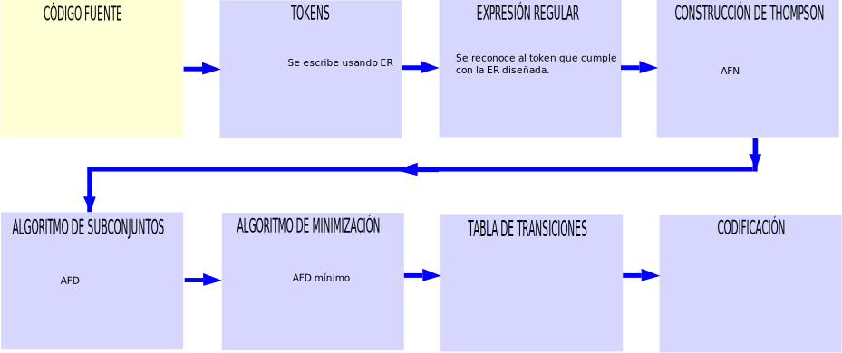
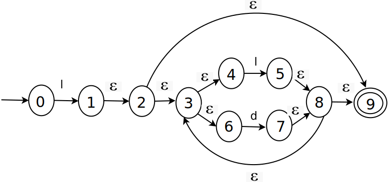
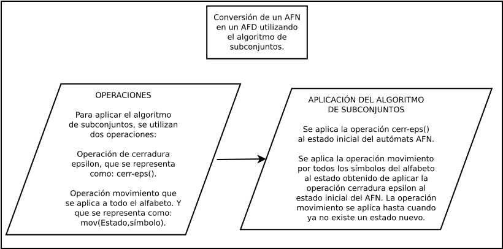
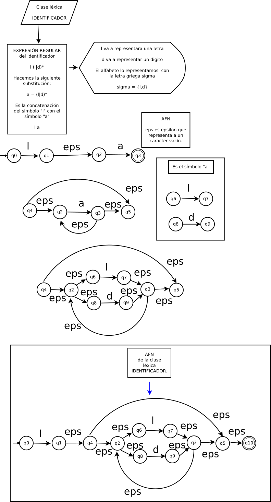
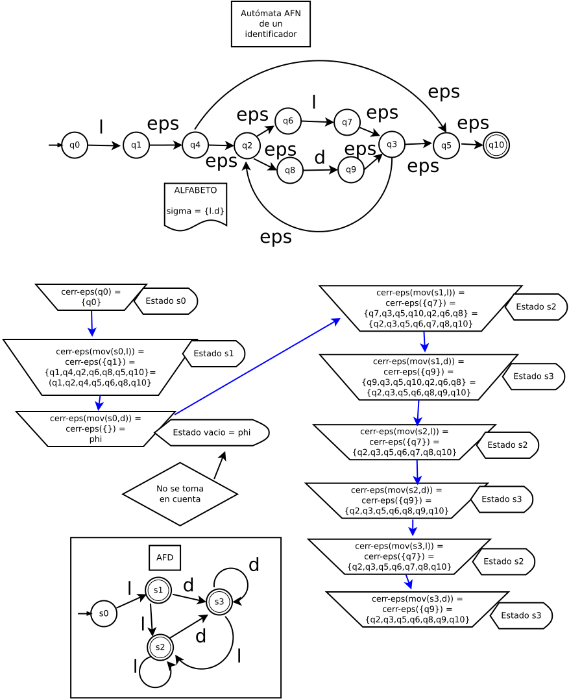
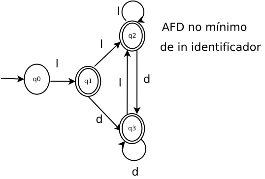

Diagrama a bloques del proceso de construcción de un analizador léxico
Estamos en la conversión de ER a AFN. Usando la construcción de Thompson:

Algoritmo de subconjuntos
Convertir el autómata AFN de la clase léxica identificador (ID). Se tiene el AFN del ID numerado, que a continuación se presenta:

Proceso de conversión de un AFN a un AFD con la aplicación del algoritmo de subconjuntos.

Definición de la operación de cerradura-ε. La cerradura-ε({S}) es el conjunto de todos los estados que reciben una transición con el carácter vacı́o ε, incluido el conjunto de estados {S} de donde salen las transiciones ε.
Para obtener el primer estado del AFD, se aplica la operación de cerradura-ε({0}), de la siguiente forma, el conjunto de estados se etiqueta como q0:
cerradura-ε({0}) = {0} = q0
Se debe consider el alfabeto Σ = {Símbolos que acepta el autómata}, para este caso:
Σ = {l, d}
Otra operación que se considera es mov(Estado, Símbolo), la cual se va aplicar al estado q0 con todos los símbolos del alfabeto Σ:
mov(q0, l) = {1}
A este conjunto de estados se le aplica la operación de cerradura-ε(q0, l), por lo que queda:
cerr-ε(mov(q0, l)) = cerr-ε({1}) = {1, 2, 3, 4, 6, 9} = q1
Ahora ase hace: De la siguiente forma:
cerr-ε(mov(q0, d)) = cerr-ε{Φ} = Φ
Ahora se aplica los movimientos y cerr-ε al estado q1:
cerr-ε(mov(q1, l)) = cerr-ε{5} = {5, 8, 3, 4, 6, 9} = q2
Se hace con el símbolo d, por lo que queda:
cerr-ε(mov(q1, d)) = cerr-ε({7}) = {7, 8, 3, 4, 6, 9} = q3
Ahora lo hacemos para q2:
cerr-ε(mov(q2, l)) = cerr-ε({5}) = {5, 8, 3, 4, 6, 9} = q2
Para el símbolo d:
cerr-ε(mov(q2, d)) = cerr-ε({7}) = {7, 8, 3, 4, 6, 9} = q3
Ahora para el estado q3:
cerr-ε(mov(q3, l)) = cerr-ε({5}) = {5, 8, 3, 4, 6, 9} = q2
Para el símbolo d:
cerr-ε(mov(q3, d)) = cerr-ε({7}) = {7, 8, 3, 4, 6, 9} = q3
Se transforma la ER para la clase léxica identificador. Lo que se muestra en el siguiente diagrama:

Ejemplo de aplicación del algoritmo de subconjuntos a la clase léxica identificador.

El autómata AFD queda como sigue:
